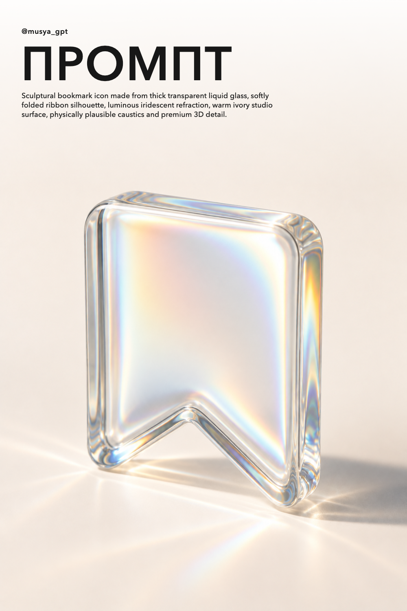

Одобренvalidated
Промпт: 3D-закладка из жидкого стекла
Готовый промпт для премиальной 3D-иконки из жидкого стекла: мягкая форма закладки, радужные преломления, тёплый студийный фон и реалистичная каустика. Сохраняйте и создавайте свои варианты в генераторе изображений Musya.
- Куда ведёт
- https://musya.app/image-generation
- Основной референс
- Grok prompt: liquid glass folder / 3D AI art / @musya_gpt
- Результат референса
- 31 819 показов · 123 сохранений · 374 кликов
Переносим
- single oversized sculptural object
- transparent iridescent liquid glass
- warm ivory seamless studio background
- large quiet area above the object
- black top-left editorial typography
Меняем
- folder becomes a bookmark/save icon
- new geometry and camera angle
- new prompt and publishing copy
manifest.json · 2026-09-22-liquid-glass-bookmark
Одобрено пользователем 2026-10-08